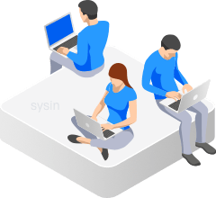

请访问原文链接：PT Application Inspector 4.5 (Linux) - 静态、动态和交互式应用程序安全测试 查看最新版。原创作品，转载请保留出处。
作者主页：sysin.org
PT Application Inspector

Positive Technologies
PT Application Inspector 是唯一一款提供高质量分析和自动确认漏洞的便捷工具的源代码分析器 - 显着加快报告工作速度并简化安全专家和开发人员之间的团队合作。
应用程序安全性：数字
100%
的测试应用程序包含漏洞
100+
单个应用程序中的平均漏洞数
100%
的金融应用程序包含高风险漏洞
85%
的应用程序包含可对用户进行攻击的漏洞
# 1
黑客和数据泄露的原因：网络攻击
72%
的周界破坏是由于网络漏洞而发生的
65%
的边界破坏导致数据的完全控制
$3,86
单次数据泄露的平均成本为 100 万美元
产品概述
PT Application Inspector 是任何规模和行业应用的正确选择。扫描方法的独特组合——静态应用程序安全测试 (SAST)、动态 应用程序安全测试（DAST）、交互式应用程序安全测试（IAST）、软件组合 分析 (SCA)，加上指纹和模式匹配 — 确保防御结果准确 应用程序无处不在，从登陆页面到企业门户、在线商店、银行应用程序、云服务和电子政务门户。
借助 PT AI，安全专业人员可以赢得
- 无需深入研究源代码即可检测并确认安全漏洞 或开发过程。
- 在花费时间之前确保漏洞可以被利用。PT AI 自动生成安全测试请求（漏洞）检查它。
- 轻松与开发团队协作，一键为其创建票证。
您的开发团队也是如此
- 无需额外设置即可开始使用PT AI。无需访问测试环境。
- 检测已确认和可疑的漏洞，重点关注最关键的漏洞。
- 快速修复代码。PT AI 显示每个漏洞的详细信息和利用情况，并自动推荐修复的最佳位置以启动修复过程。

为什么选择 PT Application Inspector
高质量分析
静态、动态和交互式应用程序安全测试 (SAST + DAST + IAST) 的组合可提供无与伦比的结果。PT Application Inspector 仅查明真正的漏洞，因此您可以专注于真正重要的问题。
快速修复
每个漏洞的准确检测、自动漏洞验证、过滤、增量扫描和交互式数据流图 (DFD) 等特殊功能使修复速度大大加快。
尽早修复
最大限度地减少最终产品中的漏洞以及修复它们的成本。在软件开发的最早阶段进行分析。
灵活的工作流程集成
安全开发生命周期 (SDL) 全面支持。与最流行的错误跟踪系统、CI/CD 和版本控制系统（Jira、Jenkins、TeamCity 等）集成。
实时保护
通过将漏洞报告自动导出到 PT 应用程序防火墙来阻止应用程序层攻击。您的应用程序始终受到保护。PT AF 在防火墙级别阻止攻击 - 即使您的团队仍在努力进行修复。
法规和标准合规性
PT AI 帮助您定期进行内部合规审计。检查源代码是否存在应用程序安全风险和未声明的功能，从而轻松遵守包括 PCI DSS 在内的关键行业标准。
让漏洞检测成为团队的努力
开发安全的应用程序需要每个人都参与其中。PT AI 为所有人服务，帮助创建安全发展文化 利益相关者—— QA、开发人员、安全专家、DevOps 专业人员，以及管理者 - 并为他们提供专注于工作和有效沟通所需的工具。
系统要求
Hardware and software requirements
Minimum hardware and software requirements for a computer with the PT AI Enterprise Server module:
x86_64-compatible 8-core processor, 2.4 GHz
16 GB RAM
200 GB of free disk space
10 Mbps network adapter
Operating system: Debian versions 10 and 11; CentOS version 8; Ubuntu versions 18.04 LTS, 20.04 LTS, 21.04, 21.10, 22.04, and 22.10; RED OS version 7.3; Astra Linux versions 1.7 and 2.12
Additional software: Docker CE version 20 or later
Available ports 80, 443, 5432, 5671, 5672, and 8501 for interaction with PT AI Enterprise Agent.
On a computer with the PT AI Enterprise Server module, it is recommended to allocate one or two RAM amounts for the swap section.
Minimum hardware and software requirements for a computer with the PT AI Enterprise Agent module:
x86_64-compatible 8-core processor, 2.4 GHz
16 GB RAM
50 GB of free hard drive space
10 Mbps network adapter
Operating system: 64-bit version of Windows 10; 64-bit version of Windows Server 2016, Debian versions 10 and 11; CentOS version 8; Ubuntu versions 18.04 LTS, 20.04 LTS, 21.04, 21.10, 22.04, and 22.10; RED OS version 7.3; Astra Linux versions 1.7 and 2.12
Additional software: Docker CE version 20 or later
Minimum hardware and software requirements for a computer with the AI.Shell module:
- Intel Core i5 2 GHz processor or similar
- 512 MB RAM
- 10 Mbps network adapter
- Operating system: 64-bit version of Windows 10; 64-bit version of Windows Server 2016, Debian versions 10 and 11; CentOS version 8; Ubuntu versions 18.04 LTS, 20.04 LTS, 21.04, and 21.10
To use the web interface, it is recommended that you use the browser:
- Mozilla Firefox 106 or later, Microsoft Edge, Google Chrome 107 or higher, Safari 15 or higher (only for macOS).
下载地址
PT Application Inspector 4.5 for Linux (include agent for Windows/Linux)
百度网盘链接：https://pan.baidu.com/s/136_H0lUOvkf5ZbW3N4It5A?pwd= <专享>
相关产品：
- PT Application Inspector 4.5 (Linux) - 静态、动态和交互式应用程序安全测试
- MaxPatrol 10 (MaxPatrol SIEM, MaxPatrol VM) - 安全信息和事件管理 (SIEM), 下一代漏洞管理系统
- PT Network Attack Discovery 11 (Linux) - 网络检测和响应 (NDR/NTA) 系统
- PT Network Attack Discovery 11 OVF - 网络检测和响应 (NDR/NTA) 系统
更多：HTTP 协议与安全

文章用于推荐和分享优秀的软件产品及其相关技术，所有软件默认提供官方原版（免费版或试用版），免费分享。对于部分产品笔者加入了自己的理解和分析，方便学习和研究使用。任何内容若侵犯了您的版权，请联系作者删除。如果您喜欢这篇文章或者觉得它对您有所帮助，或者发现有不当之处，欢迎您发表评论，也欢迎您分享这个网站，或者赞赏一下作者，谢谢！
 支付宝赞赏
支付宝赞赏  微信赞赏
微信赞赏赞赏一下
敬请注册！点击 “登录” - “用户注册”（已知不支持 21.cn/189.cn 邮箱）。 请勿使用联合登录（已关闭）。